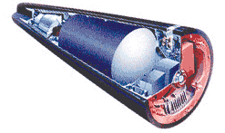
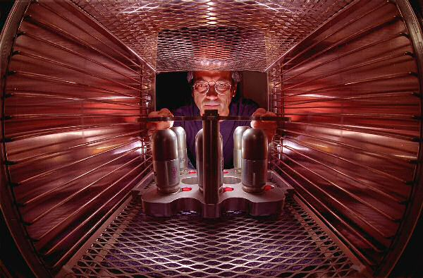

Last updated 9 January 2007
The W76 is the warhead used with the Mk 4 reentry vehicle which arms Trident II (D-5) submarine launched ballistic missiles (SLBMs). Designed for use on MIRV (multiple independently targeted reentry vehicle) bus upper stage.

| Yield | 100 Kilotons |
|---|---|
| Weight | 362.5 lb |
| Length | ? |
| Body Diameter | ? |
| Number In Service | 3030 |
Two stage thermonuclear warhead
RV CEP (circle error probability) is 1250 feet
Probably contains beryllium reflected plutonium core
High explosive is PBX-9501
Deuterium-tritium boosted
Uranium radiation case, backed with plastic
Probable thermonuclear fuel is lithium-6 deuteride in an enriched uranium jacket.
UGM-133A Trident II D5 SLBM. Trident II can carry up to 14 warheads, but due to arms limitations agreements currently carries 8 or fewer. Based on Ohio-class ballistic missile submarines.
Redundant locks.
MC4081-2 clocks on W76-1 encapsulated with removable epoxy syntactic foam
|  |
|
Neutron pulse tubes for the W76 undergoing testing and certification at Sandia National Laboratories |
Radar airburst fuze, impact fuze.
Designed and developed by Los Alamos National Laboratory (LANL).
Development cost for this warhead was $128 million.
Developmental problems were encountered, including an unexpectedly low test yield after a minor design change, and the discovery of nuclear effects vulnerability in the fuzing and firing system. One of the senior designers was Charles C. Cremer.
| May 1973 | Development engineering begun at LANL |
|---|---|
| November 1975 | Production engineering begun |
| June 1978 | First production units completed |
| November 1978 | Quantity production begun |
| July 1987 | Production completed |
| 2000 | Planning begun for the W76-1/Mk-4A life extension modification. |
| 9/2007 | Delivery of first W76-1 planned. |
Initial manufacture June 1978
Initial deployment 1978
About 3400 W76 warheads have been manufactured.
Currently in service: 3030 warheads
The first W76 warheads are approaching the end of their originally planned 30 year service life in 2008. This led to the initiation of the W76-1/Mk-4A life extension program in 2000 to refurbish the warheads for decades of further service. The first W76-1 is planned for delivery in September 2007 with completion in 2017.
Under the START II treaty 1280 W76 warheads were to be kept in service. With SORT (the "Moscow Treaty") the expected number of SLBM warheads is expected to be between 1000 and 1200, with 400 of these being the W88. The remaining 600-800 would be W76-1s.
A New York Times article by William Broad ("A Fierce Debate on Atom Bombs From Cold War") published 3 April 2005, reported the existence of a debate about the reliability of the W76:
Several factors lie behind the current worries and repair plans. The W-76 is one of the arsenal's oldest warheads. As warheads age, the risk of internal rusting, material degradation, corrosion, decay and the embrittling of critical parts increases.
The overhaul to forestall such decay is scheduled to go from 2007 to 2017. In all, it is expected to cost more than $2 billion, say experts who have analyzed federal budget figures.
Questions also surround the weapon's basic design. Four knowledgeable critics, three former scientists and one current one at the Los Alamos National Laboratory in New Mexico, which designed the W-76, have recently argued that the weapon is highly unreliable and, if not a complete dud, likely to explode with a force so reduced as to compromise its effectiveness.
"This is the one we worry about the most," said Everet H. Beckner, who oversees the arsenal as director of defense programs at the National Nuclear Security Administration.
The chief concern regarding the warhead's design is the extremely light radiation case employed:
Leaders at Los Alamos wanted the case to be as lightweight as possible, so they envisioned it as extraordinarily thin - in places not much thicker than a beer can (albeit with plastic backing for added strength).
Its physical integrity was vital. The case had to hang together for microseconds as the exploding atom bomb generated temperatures hotter than the surface of the sun, forcing it to emit radiation that kindled the thermonuclear fire. If the case deformed significantly or shattered prematurely, the weapon would fail, its thermonuclear fuel unlit.
Although the very small performance margin implicit in this design caused concern when it was first developed the current controversy stems from a reivew of the warhead conducted in 1995-1996. Richard L. Morse, a physicist at Los Alamos until 1976 returned in 1996 to participate in the review.
Morse, who directed advanced concepts for bomb design as well as a separate group devoted to laser fusion, initiated simulation studies of the W76 and found that the margins were so thin that tiny irregularities in manufacture could lead to turbulence that would disrupt the case causing the weapon to fail.
Although this issue was dropped at the time, Morse reintroduced it in 2003 during work on the W76-1 life extension modification. Although the subject of a heated March 2004 secret meeting at Los Alamos, no work on this issue is known to have been initiated.
{kind=link}